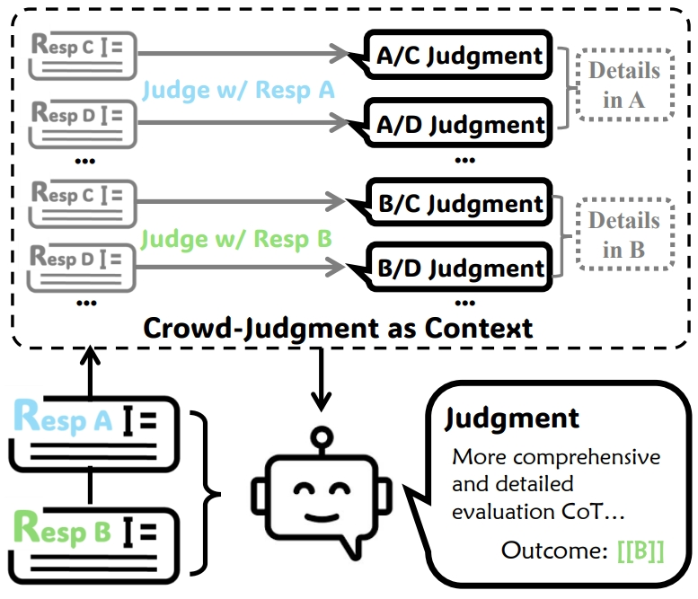

|
Qiyuan ZhangPh.D. Student.City University of Hong Kong [qzhang732-c@my.cityu.edu.hk] [qiyuanzhang97@gmail.com] [Google Scholar] [LinkedIn] [X/Twitter] [CV] |
I am currently a third-year Ph.D. Student at City University of Hong Kong, honorably advised by Prof. Kede MA and Prof. Chen MA. Previously, I earned both my Bachelor’s and Master’s degrees in Computer Science from the University of Electronic Science and Technology of China, and had the opportunity to work with Jing Jiang as a visiting student at Singapore Management University. Additionally, I will soon have the honor of joining Prof. Xue Liu’s group as a visiting student at MBUZAI.
My research focuses on Machine Learning and Natural Language Processing, with a particular emphasis on auto-evaluation, reward modeling, and improved scaling (e.g., test-time scaling). I am always excited about new collaborations—if you share these interests or see potential synergies, feel free to reach out via email!
Notably, I'm seeking any visiting and research intern opportunity, while I strive to keep exploring the frontier areas of research. I sincerely hope that someone will recognize the value of my work and potential.
Current Research Areas
- LLM-as-a-Judge/Generative Reward Models.
- Methods for Test-time Scaling.
- Auto-Benchmark.
News
| Date | Announcement |
|---|---|
| Mar 31, 2025 | Our proud survey has been released: A Survey on Test-Time Scaling in Large Language Models: What, How, Where, and How Well? |
| 21 Apr, 2025 | One paper got accepted by PAKDD 2025 |
| 11 Feb, 2025 | One paper got accepted by ICLR 2025 |
| Oct 10, 2024 | One paper got accepted by EMNLP 2024 |
Selected Publications
My selected publications represent my research style and interests.

|
A Survey on Test-Time Scaling in Large Language Models: What, How, Where, and How Well?
Qiyuan Zhang, Fuyuan Lyu, Zexu Sun, Lei Wang, Weixu Zhang, Wenyue Hua, Haolun Wu, Zhihan Guo, Yufei Wang, Niklas Muennighoff, Irwin King, Xue Liu, Chen Ma. Preprint |
|  |
Crowd Comparative Reasoning: Unlocking Comprehensive Evaluations for LLM-as-a-Judge
Qiyuan Zhang, Yufei Wang, Yuxin Jiang, Liangyou Li, Chuhan Wu, Yasheng Wang, Xin Jiang, Lifeng Shang, Ruiming Tang, Fuyuan Lyu, Chen Ma. Under Review in ACL 2025 |

|
RevisEval: Improving LLM-as-a-Judge via Response-Adapted References
Qiyuan Zhang, Yufei Wang, Tiezheng YU, Yuxin Jiang, Chuhan Wu, Liangyou Li, Yasheng Wang, Xin Jiang, Lifeng Shang, Ruiming Tang, Fuyuan Lyu, Chen Ma. ICLR 2024 |
|
Collaborative Performance Prediction for Large Language Models
Qiyuan Zhang, Fuyuan Lyu, Xue Liu, Chen Ma. EMNLP 2024 | |

|
NOAHQA: Numerical Reasoning with Interpretable Graph Question Answering Dataset
Qiyuan Zhang, Lei Wang, Sicheng Yu, Shuohang Wang, Yang Wang, Jing Jiang, Ee-Peng Lim. EMNLP 2021 Findings |
|
MWPToolkit: An Open-Source Framework for Deep Learning-Based Math Word Problem Solvers
Yihuai Lan, Lei Wang, Qiyuan Zhang , Yunshi Lan, Bing Tian Dai, Yan Wang, Dongxiang Zhang, Ee-Peng Lim. AAAI 2021 WorkShop |